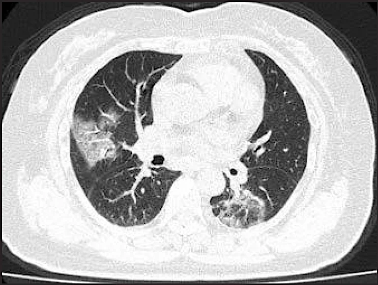
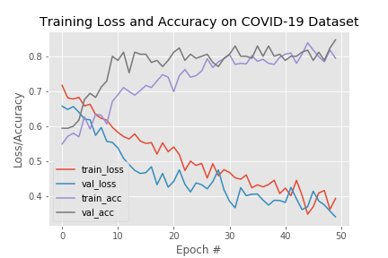
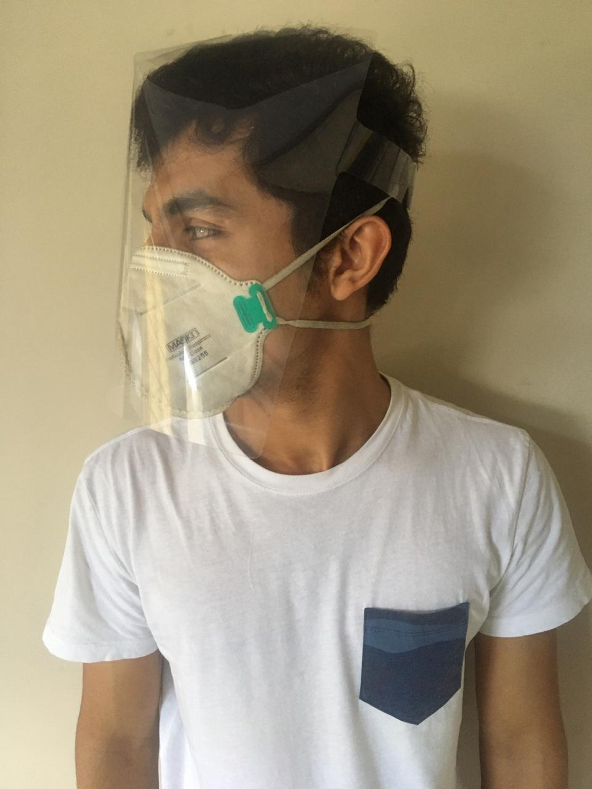
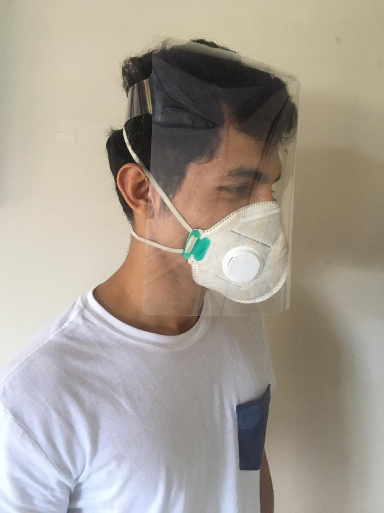
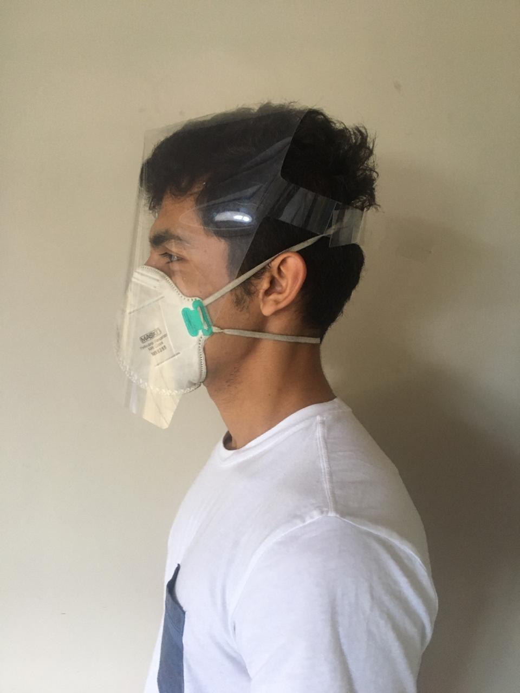
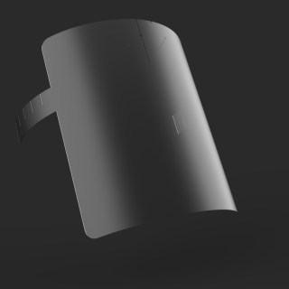
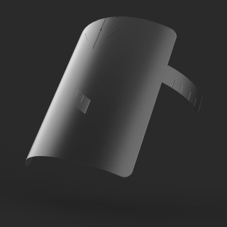
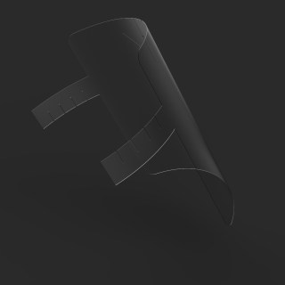
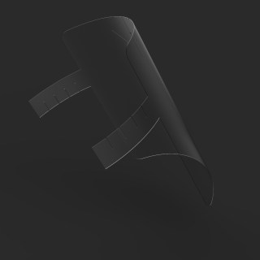

New
COVID-19 Projects
-
Deep Learning based framework for detection of COVID-19 with CT-images (June 2020)
Objective
Radiographic patterns on CT chest scans have shown higher sensitivity and specificity compared to RT-PCR detection of COVID-19 which, according to the WHO has a relatively low positive detection rate in the early stages. The objective of this paper was to propose a methodology to diagnose COVID-19 based on CT images. The CT features of COVID-19 are reported using Deep learning technique.
In fig 2, the train_acc and val_acc lines indicate the increasing accuracy of the model as the model is trained multiple times(epochs) over the categorised images from the dataset. The deep learning model developed can detect COVID-19 and differentiate it from community acquired pneumonia and other lung diseases with an accuracy of around 84%.
 Fig 1: A CT scan image from the dataset
Fig 2: Graphical representation of increasing accuracy of the developed model
-
Delivery Of Healthcare Services Through An Interactive Telemedicine Platform (May 2020 - June 2020)
A Telehealth platform which provides efficient telehealth services and diagnostic kits by partnering with pharmacies/other providers around the region of a patient who wants to schedule a call.
UMO Global Design Challenge entry.
-
ChatBot- Covid-19 Chatbot (March 2020 - April 2020)
A part of MHRD’s Samadhan Challenge.
Amidst COVID-19 pandemic crisis, it’s not only important to deliver medical care but also provide information to help people make decisions and prevent health systems from being overwhelmed. Most people are uninformed about answers to basic questions related to covid-19 and how to be safe, what are the symptoms, how it spreads, various rules and regulations of government. For all such information they need to search the internet where the information is not organised in one place. So our one stop solution is useful for everyone who is facing this problem.
Our ChatBot is integrated here on our website itself!
Just click on the icon on the bottom right corner of this page to get started. -
Face sheild for frontline workers (March 2020 - April 2020)
  
Problem Background
Given the infectious nature of COVID-19, people encountering with the infected must constantly keep themselves safe. While this can be done by maintaining social distancing, the front-line workers who tend to be in close contact with the infected have to take extra precautions.
Hence, to keep them safe, WHO recommends use of Personal Protective Equipment (PPE), which comprises masks, face shields, suits and rubber boots. With the number of increasing cases and short lifespan of the PPE kits (given the infectious nature of the disease), our country is facing a shortage of these protective equipment. It has been highlighted a lot of times in media too.
Hence, to keep them safe, WHO recommends use of Personal Protective Equipment (PPE), which comprises masks, face shields, suits and rubber boots. With the number of increasing cases and short lifespan of the PPE kits (given the infectious nature of the disease), our country is facing a shortage of these protective equipment. It has been highlighted a lot of times in media too.
Doctors and Medical professionals have refused to treat patients due to unavailability of protective gear. Pertaining to this issue, REDX WeSchool has launched makeshift face shields. These face shields add an extra layer of protection and improves the lifespan of masks and goggles. It can be used by nurses, police officials and people who work at the frontline but do not come in direct contact or have little contact with the infected.
Features
1. A one piece face shield which is easy to assemble and mass produce.
2. Made out of PET/PETG material and can be laser cut or die cut thus increasing the production rate.
3. Lightweight and easy to use.
4. Adjustable for multiple head sizes.
5. The design can be nested for optimum use of PET sheets during manufacturing thereby increasing efficiency and reducing waste of resources.
We have Open sourced the design - Just fill up your basic information in the link below and we will send you the files!
Click here for the design
3D Models
 
 
